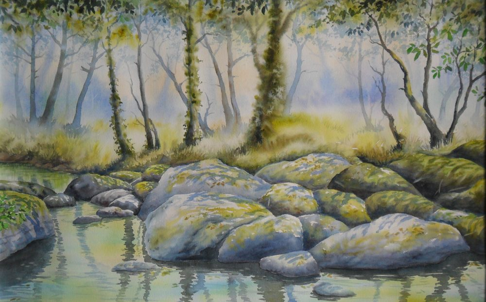

Un chantier de parking paysager pour découvrir la démarche du concepteur paysagiste.
Analysez d’abord le site, puis proposez un aménagement cohérent.
Projet PIC — Antoine Coquel & Clément Delsupexhe
Avant de commencer
Comment jouer ?
Analyser.
Sur le chantier Parking, passez de la vue aérienne aux vues piétonnes
et touchez les yeux pour découvrir les contraintes du site.
Aménager.
Une fois l’analyse terminée, le jeu passe à la phase d’aménagement.
Consultez le plan QGIS, puis ouvrez le rendu réaliste et choisissez les revêtements.
Choisir les végétaux.
Plantez les arbres de la bande centrale et de la noue. Choisissez les plantes des cinq zones de vivaces, trois en bordure et deux dans la noue. Consultez les fiches pour vérifier si les plantes conviennent.
La mission est notée sur 5 000 points. Les végétaux représentent 4 000 points, les voies 500 et les places 500. Consulte les besoins des plantes et les indices du terrain avant de choisir.
Chantier ParkingAnalyse
Chargement…
Score0

Fin de la mission
—
0points / 5 000
0 %de réussite
0étoiles / 3
Votre parking, vu du ciel et depuis l’accès
Chantier
Score
Étoiles
Classement des joueurs
Aucun score enregistré pour le moment.
Chantier terminé
Bravo !
0/ 5 000 points
Détail de la partie
Détail du chantier Parking
Observation du site
Point d’analyse
Indice
Indices du site
Espace réservé
Accès administrateur
Entrez le code administrateur pour ouvrir les réglages du jeu.